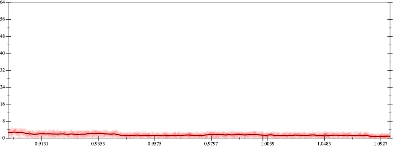
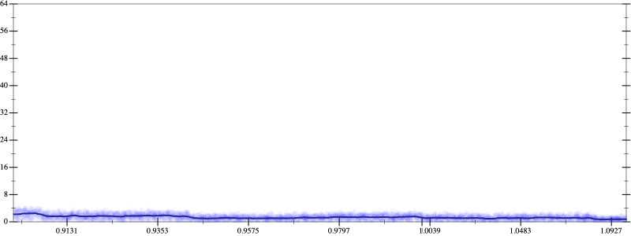
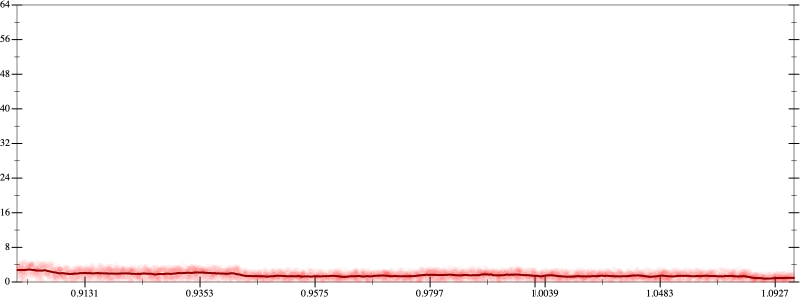
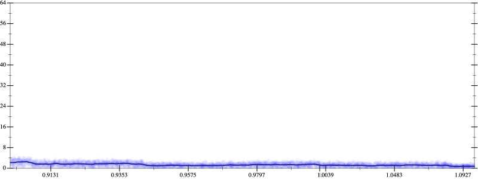

Initial program 1.6
\[\left(0.375 + -3.75 \cdot \left(x \cdot x\right)\right) + 4.375 \cdot \left(\left(\left(x \cdot x\right) \cdot x\right) \cdot x\right)\]
- Using strategy
rm Applied associate-*r*1.6
\[\leadsto \left(0.375 + -3.75 \cdot \left(x \cdot x\right)\right) + \color{blue}{\left(4.375 \cdot \left(\left(x \cdot x\right) \cdot x\right)\right) \cdot x}\]
- Using strategy
rm Applied add-log-exp1.6
\[\leadsto \color{blue}{\log \left(e^{\left(0.375 + -3.75 \cdot \left(x \cdot x\right)\right) + \left(4.375 \cdot \left(\left(x \cdot x\right) \cdot x\right)\right) \cdot x}\right)}\]
- Using strategy
rm Applied add-sqr-sqrt1.6
\[\leadsto \log \left(e^{\color{blue}{\sqrt{\left(0.375 + -3.75 \cdot \left(x \cdot x\right)\right) + \left(4.375 \cdot \left(\left(x \cdot x\right) \cdot x\right)\right) \cdot x} \cdot \sqrt{\left(0.375 + -3.75 \cdot \left(x \cdot x\right)\right) + \left(4.375 \cdot \left(\left(x \cdot x\right) \cdot x\right)\right) \cdot x}}}\right)\]
Applied exp-prod1.6
\[\leadsto \log \color{blue}{\left({\left(e^{\sqrt{\left(0.375 + -3.75 \cdot \left(x \cdot x\right)\right) + \left(4.375 \cdot \left(\left(x \cdot x\right) \cdot x\right)\right) \cdot x}}\right)}^{\left(\sqrt{\left(0.375 + -3.75 \cdot \left(x \cdot x\right)\right) + \left(4.375 \cdot \left(\left(x \cdot x\right) \cdot x\right)\right) \cdot x}\right)}\right)}\]
Applied log-pow1.6
\[\leadsto \color{blue}{\sqrt{\left(0.375 + -3.75 \cdot \left(x \cdot x\right)\right) + \left(4.375 \cdot \left(\left(x \cdot x\right) \cdot x\right)\right) \cdot x} \cdot \log \left(e^{\sqrt{\left(0.375 + -3.75 \cdot \left(x \cdot x\right)\right) + \left(4.375 \cdot \left(\left(x \cdot x\right) \cdot x\right)\right) \cdot x}}\right)}\]
Applied simplify1.4
\[\leadsto \sqrt{\left(0.375 + -3.75 \cdot \left(x \cdot x\right)\right) + \left(4.375 \cdot \left(\left(x \cdot x\right) \cdot x\right)\right) \cdot x} \cdot \color{blue}{\sqrt{\left({x}^{3} \cdot \left(x \cdot 4.375\right) + \left(x \cdot -3.75\right) \cdot x\right) + 0.375}}\]
- Using strategy
rm Applied associate-*r*1.3
\[\leadsto \sqrt{\left(0.375 + -3.75 \cdot \left(x \cdot x\right)\right) + \left(4.375 \cdot \left(\left(x \cdot x\right) \cdot x\right)\right) \cdot x} \cdot \sqrt{\left(\color{blue}{\left({x}^{3} \cdot x\right) \cdot 4.375} + \left(x \cdot -3.75\right) \cdot x\right) + 0.375}\]
 
